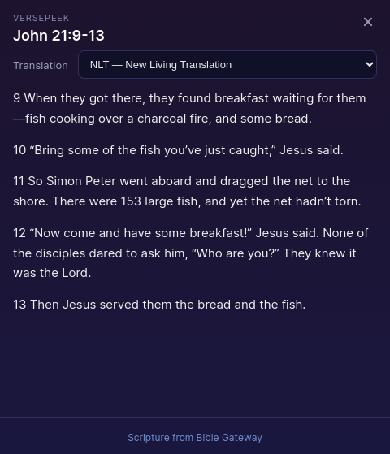
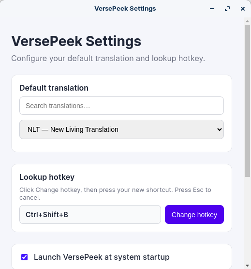

Linux
Ubuntu / Debian and portable AppImage.
sudo apt install ./versepeek_1.0.0_amd64.deb
VersePeek
Highlight a Bible reference in any app, press your hotkey, and read the full passage instantly.

How it works
Select a reference like John 3:16 or Matt. 4 in any app.
Default is Ctrl+Shift+B. Change it anytime in Settings.
Peek the passage, switch translations, then close with × or Esc.
Features
Lookup from any desktop app without copy-pasting into a browser.
Default NLT—or pass a version inline, like John 3:16 NKJV.
Chapter-only, ranges, and natural phrasing such as Romans chapter 7, verses 18 and 23.
Press-to-bind hotkeys, startup option, and About—all from the system tray.
Inside the app

Download
Free and open source. Installers are published on GitHub Releases.
Ubuntu / Debian and portable AppImage.
sudo apt install ./versepeek_1.0.0_amd64.deb
NSIS installer — choose your install folder.
Unsigned builds may show SmartScreen — More info → Run anyway.
Reviews
Curated notes from early users. Want to share yours? Open a short review Issue—we’ll feature the best ones here.
“Finally I can check a verse mid-sermon notes without opening a pile of tabs. The hotkey feels native.”
“Natural references like ‘Romans chapter 7, verses 18 and 23’ just worked. That alone sold me.”
“Clean tray app, dark popup that matches my desktop, and I set my own shortcut in seconds.”
Feedback
Bugs, ideas, and rough edges—tell us through a GitHub Issue. Public and tracked so nothing gets lost in an inbox.